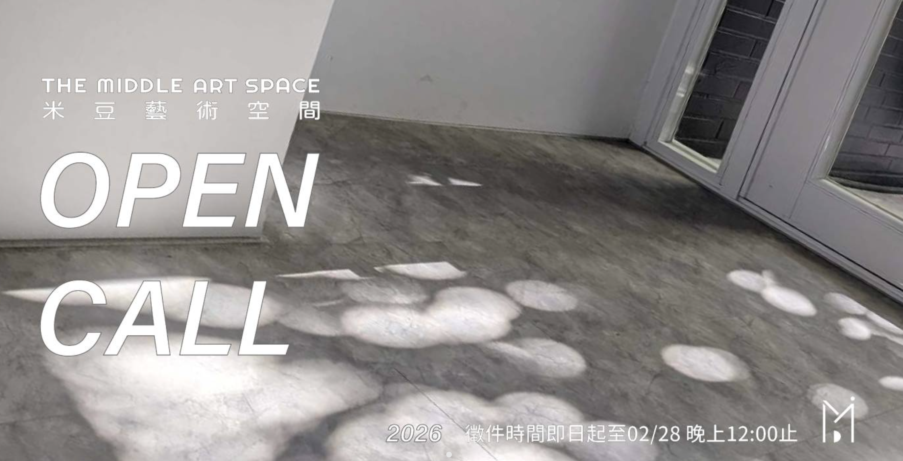
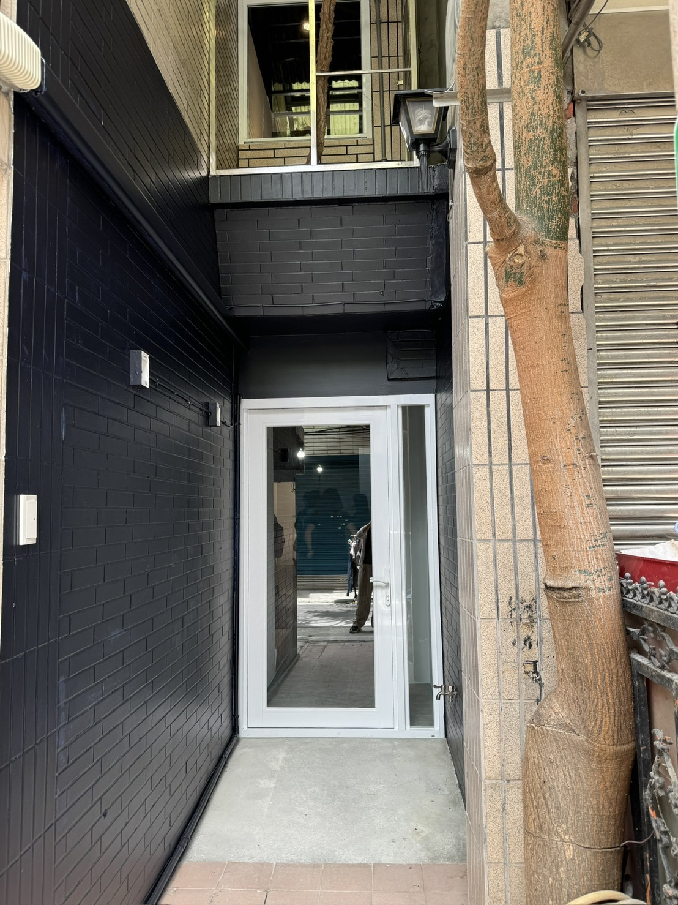
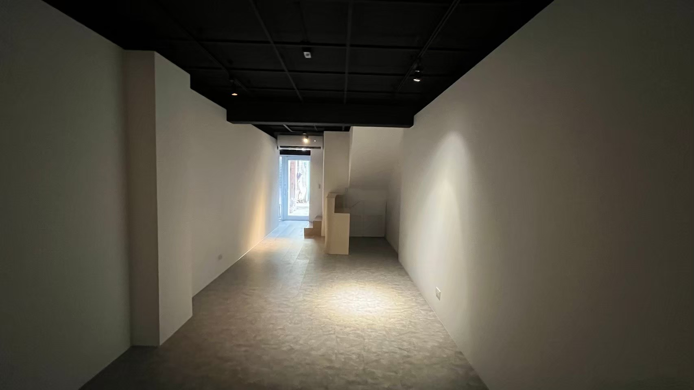
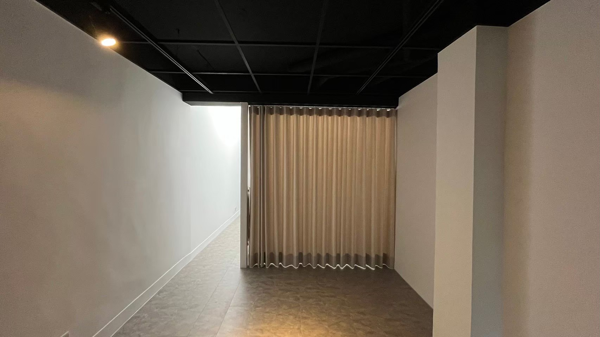
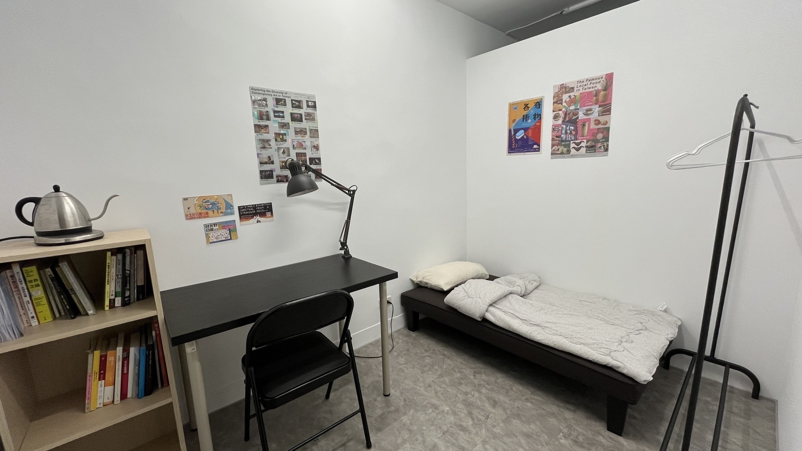
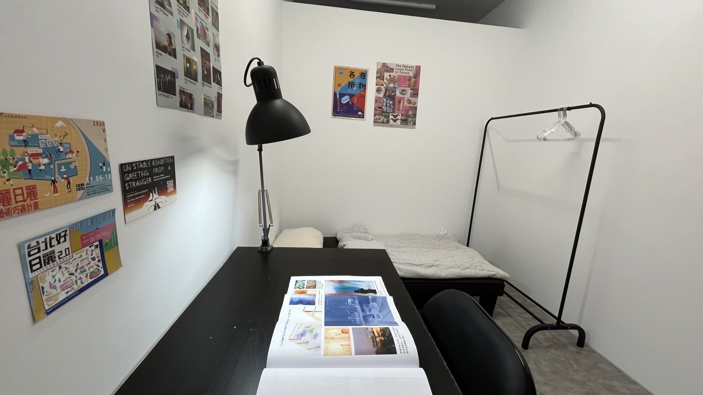
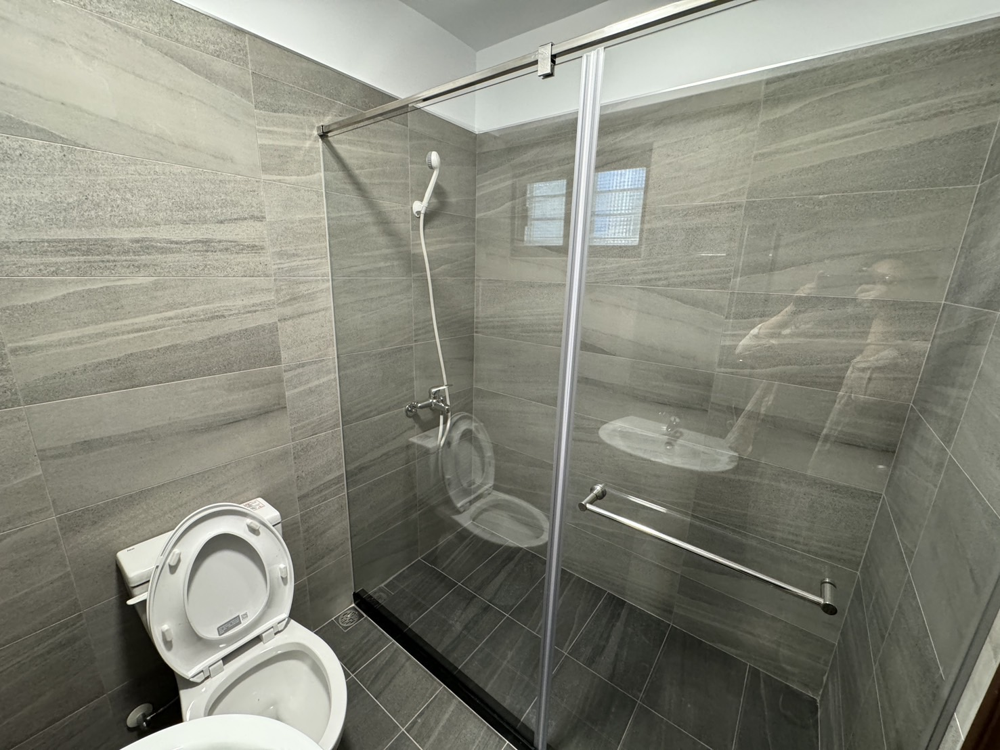

/Open Call

駐村資訊
米豆藝術空間自 2023 年成立以來，持續邀請不同領域的青年藝術家進駐，透過展覽、工作坊與各類藝術交流活動，建立臺灣與國際藝術社群之間的連結。駐村計畫延續空間對青年創作與跨文化交流的關注，期待藝術家在不同的生活環境中拓展創作視野，並透過彼此的相遇與對話，開展新的合作可能。
計畫鼓勵藝術家從自身的創作脈絡出發，透過觀察、研究與實驗，探索臺北的文化地景與日常生活，發展創作想法。同時，藉由作品呈現與交流活動，分享駐村期間的思考與實踐，讓藝術創作與在地觀眾產生連結。
駐村地點
米豆藝術空間座落於臺北市後火車站、建成圓環周邊，鄰近捷運中山站，步行即可抵達寧夏夜市，交通與生活機能便利。街區中的歷史紋理、商業活動與生活樣貌，提供藝術家認識臺北的多元視角，也成為駐村期間觀察與探索的起點。
米豆藝術空間 Middle Art Space
臺北市大同區太原路 156 巷 13 號 1 樓
空間資訊





